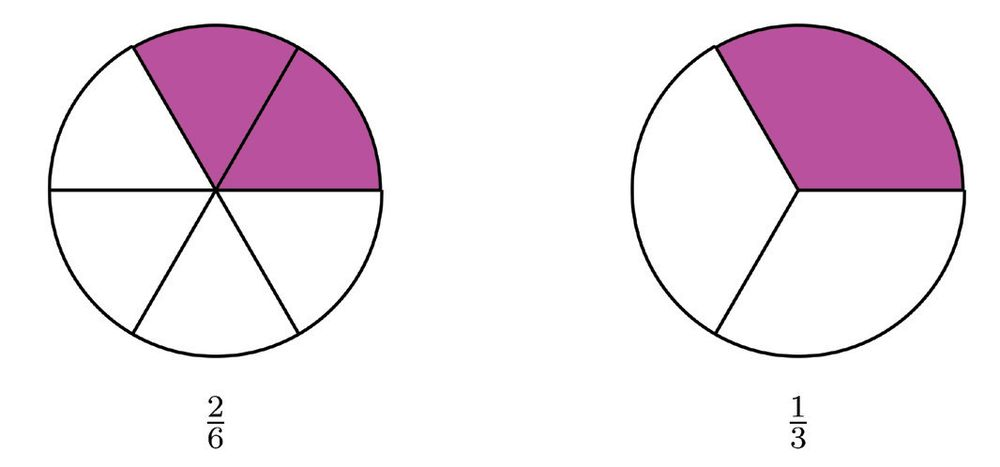
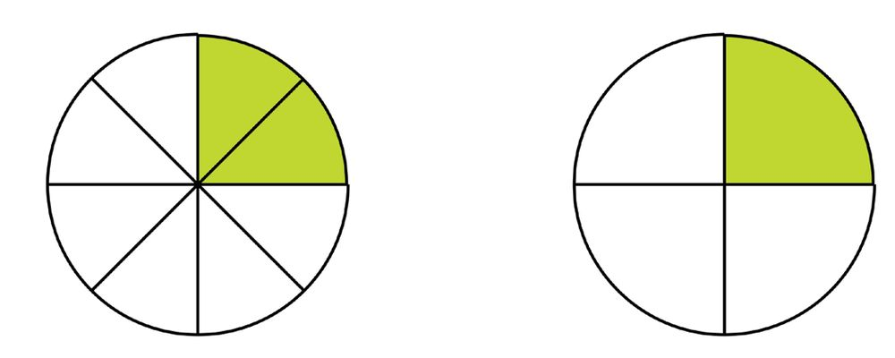

ഭാഗങ്ങൾ ചേരുമ്പോോൾ
ഒരു വട്ടത്തെ നാല് സമഭാഗങ്ങളാക്കിയതിൽ രണ്ടെണ്ണം ചേർത്തുവച്ചാൽ പകുതി
വട്ടമായി:
അതായത്, കാൽ വട്ടത്തിനോോട് കാൽ വട്ടം ചേർത്താൽ അര വട്ടം; അഥവാ കാലും
കാലും ചേർന്നാൽ അര.
ഇക്കാര്യംം ഇങ്ങനെ എഴുതാം:
1 1 1
4
4
2
ഒരു വട്ടം വരച്ച്, ആറ് സമഭാഗങ്ങൾ അടയാളപ്പെടുത്തുക. ഒരു ഭാഗത്തിന് നിറം
കൊൊടുക്കുക:
ഒരു ഭാഗത്തിനുകൂടി നിറം കൊൊടുക്കുക:
47
Page 48
Figure fig_ch04_p048_01 (Page 48)

Figure fig_ch04_p048_02 (Page 48)

Figure fig_ch04_p048_03 (Page 48)
സ്റ്റാൻഡേർഡ് VI ഗണിതം
ഇപ്പോോൾ വട്ടത്തിന്റെ 62 ഭാഗത്തിന് നിറമായി. 62 എന്നത്, 13 ന്റെ വേറൊൊരു രൂപമല്ലേ ?
ഇക്കാര്യയവും ഒരു തുകയായി എഴുതാം:
1 1 2 1
6
6
6
3
ഇനി വട്ടത്തെ എട്ട് സമഭാഗങ്ങളാക്കിയതിൽ രണ്ടെണ്ണം ചേർത്തുവച്ചാൽ ആകെ എത്ര ഭാഗ
മാകുമെന്ന് മനക്കണക്കായി പറയാമോോ ?
8 സമഭാഗങ്ങളിൽ 2 എണ്ണമെടുത്താൽ 82 ; മാത്രവുമല്ല,
2
=
8
2 #1
=
2 # 4
1
4
എന്നും കാണാം. അപ്പോോൾ
1 1 2 1
8
8
8
4
ചിത്രം വരച്ച് നിറംകൊൊടുത്തും ഇതുകാണാം:
വട്ടത്തിന്റെ 18 ഭാഗവും 83 ഭാഗവും ചേർത്തുവച്ചാൽ എത്ര ഭാഗമാകും ?
8 സമഭാഗങ്ങളാക്കിയതിൽ 1 + 3 = 4 ഭാഗങ്ങളാണ് ആകെ എടുത്തിരിക്കുന്നത്. അതായത് 84
നീളമുള്ള ഒരു നാടയെടുത്ത് അതിൽ 9 സമഭാഗങ്ങൾ അടയാളപ്പെടുത്തുക:
ഇതിൽ 2 ഭാഗങ്ങൾക്ക് നിറം കൊൊടുക്കുക.
ഇനി 4 ഭാഗങ്ങൾക്ക് കൂടി നിറം കൊൊടുക്കുക.
ഇപ്പോോൾ 2 + 4 = 6 എണ്ണത്തിന് നിറമായി.
മറ്റൊൊരു രീതിയിൽ പറയാം: ആദ്യംം നിറം കൊൊടുത്തത്, നാടയുടെ 92 ഭാഗം; രണ്ടാമത് നിറം
കൊൊടുത്തത്, നാടയുടെ 94 ഭാഗം; ആകെ നിറം കൊൊടുത്തത് 69 ഭാഗം.
ഇത് ഭിന്നസംഖ്യയകളുടെ തുകയായി എഴുതാം:
2 4 6
9
9
9
ഇതിൽ 69 നെ ലഘുരൂപത്തിൽ എഴുതാമല്ലോോ.
6
=
9
3 # 2
=
3 # 3
2
3
അതായത്,
2 4 6 2
9
9
9
3
ഈ ചിത്രം നോോക്കൂ:
ചുവന്ന നിറം കൊൊടുത്തിരിക്കുന്നത് ചിത്രത്തിന്റെ എത്ര ഭാഗത്തിനാണ് ?
പച്ച നിറമോോ ?
ആകെ നിറം കൊൊടുത്തിരിക്കുന്നത് എത്ര ഭാഗത്തിനാണ് ?
ഇതിൽനിന്ന് കിട്ടുന്ന ഭിന്നസംഖ്യയകളുടെ തുക എന്താണ് ?
ഇതുപോോലെ ചുവടെയുള്ള ഓരോോ ചിത്രത്തിലും, വ്യയത്യയസ്ത നിറം കൊൊടുത്ത ഭാഗങ്ങളുംം, ആകെ
നിറം കൊൊടുത്തിരിക്കുന്ന ഭാഗങ്ങളുംം ഭിന്നസംഖ്യയകളായി എഴുതുക. ഓരോോ ചിത്രത്തിൽ നിന്നും
കിട്ടുന്ന ഭിന്നസംഖ്യയകളുടെ തുക ലഘുരൂപത്തിൽ എഴുതുക:
ഭിന്നസങ്കലനം
ഒരു വട്ടത്തെ നാല് സമഭാഗങ്ങളാക്കി, അതിൽ രണ്ട് കഷണങ്ങൾ ചേർത്തുവച്ചാൽ പകുതി
വട്ടം കിട്ടുംം.
ഒരു കഷണം കൂടി ചേർത്തുവച്ചാലോോ ?
മുക്കാൽ വട്ടമായി. അതായത്, അരയും കാലും ചേർന്നാൽ മുക്കാൽ:
1 1 3
2
4
4
ഇനി ഈ ചിത്രം നോോക്കുക:
വട്ടത്തിനെ 6 സമഭാഗങ്ങളാക്കി, അവയിൽ 1 ന് ചുവപ്പു നിറവും, 2 എണ്ണത്തിന് മഞ്ഞ നിറവും
കൊൊടുത്തിരിക്കുന്നു. ആകെ നിറം കൊൊടുത്തത് 1 + 2 = 3 ഭാഗങ്ങൾ. ഇക്കാര്യംം ഭിന്നസംഖ്യയകളു
ടെ തുകയായി എങ്ങനെ എഴുതാം ?
1 2 3
6
6
6
ഭാഗക്കണക്കുകൾ
2 3
6 , 6 എന്നിവയെ ലഘുരൂപത്തിലെഴുതിയാൽ, ഇത് ഇങ്ങനെയാകും.
1 1 5
3
2
6
ഇനി ഈ ചിത്രങ്ങൾ നോോക്കുക.
ഒരേ വലുപ്പമുള്ള രണ്ട് വൃത്തങ്ങളിൽ ഒന്നിന്റെ 14 ഭാഗവും, മറ്റൊൊന്നിന്റെ 83 ഭാഗവും മുറിച്ചെ
ടുത്ത് ചേർത്തുവച്ചിരിക്കുന്നു. ഇത് ഒരു വൃത്തത്തിന്റെ എത്ര ഭാഗമാണ് ?
കഷണങ്ങളെല്ലാം ഒരേ പോോലെയാണെങ്കിൽ എളുപ്പം കൂട്ടിയെടുക്കാം.
ഇതിലെ 14 ഭാഗത്തിനെ 8 സമഭാഗങ്ങളിൽ 2 എണ്ണം ചേർന്നതായി
കണ്ടല്ലോോ ?
3
8 എന്നത് ഇത്തരം 3 ഭാഗങ്ങൾ ചേർന്നതാണ്.
മീറ്റർ നീളമുള്ള ഒരു നാടയും 52 മീറ്റർ നീളമുള്ള മറ്റൊൊരു നാടയും അറ്റത്തോോടറ്റം
ചേർത്തു വച്ചാൽ ആകെ എത്ര മീറ്റർ ആകും ?
1 മീറ്റർ നീളമുള്ള നാടയെ 10 സമഭാഗങ്ങളാക്കി, അതിൽ 3 എണ്ണം എടുത്തതാണല്ലോോ ആദ്യയ
രണ്ടാമത്തെ നാട, 1 മീറ്റർ നാടയെ 5 സമഭാഗങ്ങളാക്കി, അതിൽ 2 എണ്ണം എടുത്തതും.
രണ്ടും 1 മീറ്ററിന്റെ ഭാഗങ്ങൾ ചേർന്നതാണെങ്കിലും, ഒന്നിച്ചെടുത്താൽ സമഭാഗങ്ങളല്ലല്ലോോ;
അപ്പോോൾ ആകെ മീറ്ററിന്റെ എത്ര ഭാഗം എന്ന് എങ്ങനെ കണക്കാക്കും ?
2
5 മീറ്ററിനെ, 10 സമഭാഗങ്ങളിൽ 4 എണ്ണം എന്നും എടുക്കാം:
അപ്പോോൾ 1 മീറ്ററിനെ 10 സമഭാഗങ്ങളാക്കിയതിൽ 3 എണ്ണം ചേർന്നത് ആദ്യയത്തെ നാട, ഇത്തരം
ഭാഗങ്ങളിൽ 4 എണ്ണം ചേർന്നത് രണ്ടാമത്തെ നാട; ആകെ 7 സമഭാഗങ്ങൾ.
ഈ കണക്കുകളിലെല്ലാം കണ്ടതെന്താണ് ?
ഭിന്നസംഖ്യാരൂപത്തിലുള്ള രണ്ട് അളവുകൾ ചേർത്തുവച്ച് അളവ് കണക്കാക്കാൻ, രണ്ടിനെയും
ഒരേ സമഭാഗങ്ങളുടെ കൂട്ടമായി കാണണം.
54
Page 55
Figure fig_ch04_p055_01 (Page 55)
ഭാഗക്കണക്കുകൾ
അതായത്, രണ്ട് ഭിന്നസംഖ്യയകളെയും ഒരേ ഛേദമായ രൂപത്തിലാക്കണം.
ഉദാഹരണമായി,
1 +2
4 5
എങ്ങനെ കണക്കാക്കും ?
ആദ്യംം ഇവയെ ഒരേ ഛേദമായ രൂപത്തിലാക്കണം.
1
4 ന്റെ പലരൂപങ്ങളിലെല്ലാം, ഛേദം 4 ന്റെ ഗുണിതങ്ങളാണ്.
2
5 ന്റെ പലരൂപങ്ങളിലെല്ലാം, ഛേദം 5 ന്റെ ഗുണിതങ്ങളുംം.
(3) ഒരു ടാങ്കിൽ വെള്ളം നിറയ്ക്കാൻ രണ്ട് കുഴലുകളുണ്ട്. ഒന്നാമത്തെ കുഴൽ മാത്രം
തുറന്നുവച്ചാൽ, 10 മിനിറ്റ് കൊൊണ്ട് ടാങ്ക് നിറയും. രണ്ടാമത്തെ കുഴൽ മാത്രം തുറന്നു
വച്ചാൽ, ടാങ്ക് നിറയാൻ 15 മിനിറ്റ് വേണം.
(i) ഒന്നാമത്തെ കുഴൽ മാത്രം തുറന്നുവച്ചാൽ, ഒരു മിനിറ്റ് കൊൊണ്ട് ടാങ്കിന്റെ എത്ര
ഭാഗം നിറയും ?
(ii) രണ്ടാമത്തെ കുഴൽ മാത്രം തുറന്നുവച്ചാൽ, ഒരു മിനിറ്റ് കൊൊണ്ട് ടാങ്കിന്റെ എത്ര
ഭാഗം നിറയും ?
(iii) രണ്ട് കുഴലും തുറന്നുവച്ചാൽ, ഒരു മിനിറ്റ് കൊൊണ്ട് ടാങ്കിന്റെ എത്ര ഭാഗം നിറയും?
(iv) രണ്ട് കുഴലും തുറന്നുവച്ചാൽ, എത്ര മിനിറ്റ് കൊൊണ്ട് ടാങ്ക് നിറയും ?
ഇതിലെല്ലാം ചെയ്തിരിക്കുന്നത് എന്താണ് ?
കൂട്ടുന്ന രണ്ട് ഭിന്നസംഖ്യയകളിൽ ഒരെണ്ണം, ഒന്നിനെ സമഭാഗങ്ങളാക്കിയതിൽ ചില ഭാഗങ്ങൾ
എടുത്തതാണ്; മിച്ചമുള്ള ഭാഗങ്ങൾ എടുത്തതാണ് രണ്ടാമത്തെ ഭിന്നസംഖ്യയ. ഇവ ചേരുമ്പോോൾ,
ഭാഗങ്ങളെല്ലാം ആയില്ലേ ? അതായത്, മുഴുവനായി.
ചുവടെ കൊൊടുത്തിരിക്കുന്ന ഓരോോ ഭിന്നസംഖ്യയയോോടുംം കൂട്ടിയാൽ 1 കിട്ടുന്ന
ഭിന്നസംഖ്യയ മനക്കണക്കായി പറയാമോോ ?
(i) 72
ഇനി ഈ കണക്ക് നോോക്കുക:
ഒരു പാത്രത്തിൽ മുക്കാൽ ലിറ്റർ പാലുണ്ട്;
അതിൽ അര ലിറ്റർ പാൽ കൂടി ഒഴിച്ചാൽ,
ആകെ എത്ര ലിറ്ററായി ?
അര ലിറ്റർ ഒഴിച്ചത്, കാൽ ലിറ്റർ വീതം രണ്ട് തവണ
യായിട്ടാണെന്നു കരുതുക. ആദ്യയത്തെ കാൽ ലിറ്റർ
ഒഴിച്ചപ്പോോൾ ഒരു ലിറ്ററായി (മുക്കാലും കാലും).
വീണ്ടും കാൽ ലിറ്റർ ഒഴിച്ചപ്പോോഴോോ?
ഒന്നേകാൽ ലിറ്റർ.
ഇത് ഭിന്നസംഖ്യയകളുടെ തുകയായി എഴുതിയാലോോ ?
3 + 1
3 + 1 + 1
4
2 = 4
4
4
1
= 1 + 4
= 1 14
നേരത്തെ ഛേദം തുല്യയമാക്കി കൂട്ടിയതുപോോലെ ഇതു ചെയ്താലോോ ?
3 1 3 2 5
4
2
4
4
4
ഇനി 54 നെ ഇങ്ങനെ പിരിച്ചെഴുതാമല്ലോോ.
5 4 1 4 1 1 1
1
14
4
4
4
4
4
അതായത് എങ്ങനെ കൂട്ടിയാലും ശരിയാണ്.
മുക്കാൽ ലിറ്ററിന്റെ കൂടെ മുക്കാൽ ലിറ്റർ തന്നെ ചേർത്താലോോ ?
മുക്കാലും കാലും ഒന്ന്; ഇനി ചേർക്കേണ്ടത് അര; ആകെ ഒന്നര ലിറ്റർ
3 + 3
3 + 1 + 2
4
4 = 4
4
4
1
= 1 + 2
മറ്റൊൊരു കണക്ക് നോോക്കാം:
ഒരേ വലുപ്പത്തിലുള്ള രണ്ട് വട്ടങ്ങൾ വരച്ച്,
ഒന്നിന്റെ പകുതിയും മറ്റൊൊന്നിന്റെ മൂന്നിൽ
രണ്ട് ഭാഗവും നിറം കൊൊടുക്കുക:
നിറം കൊൊടുത്ത ഭാഗങ്ങൾ മുറിച്ചെടുത്ത്
ചേർത്തുവയ്ക്കാൻ പറ്റുമോോ ?
ഇങ്ങനെ മുറിച്ചാലോോ ?
ഒരു മുഴുവൻ വട്ടവും മിച്ചമൊൊരു ഭാഗവുമായി
കഷണങ്ങൾ ചേർത്തുവയ്ക്കാം.
ഇതിന്റെ കണക്ക് എഴുതി നോോക്കാം:
1 + 2
3 + 4
2
3 = 6
6
3 + 3 + 1
= 6
6
6
= 1 + 16
= 1 16
വേറൊൊരു കണക്ക്:
അനൂപിനും അച്ഛനും ഷർട്ടിന്
തുണി വാങ്ങണം. അനൂപിന്
ഒന്നര മീറ്ററുംം, അച്ഛന് രണ്ടേകാൽ
മീറ്ററുംം. ഒരേയിനം തുണി വാങ്ങു
കയാണെങ്കിൽ ആകെ എത്ര മീറ്റർ
തുണി വാങ്ങണം ?
(2) ഒരു പാത്രത്തിൽ ഒന്നര ലിറ്റർ പാലും മറ്റൊൊരു പാത്രത്തിൽ രണ്ടേമുക്കാൽ ലിറ്റർ പാലു
മുണ്ട്. രണ്ട് പാത്രത്തിലും കൂടി ആകെ എത്ര ലിറ്റർ പാലുണ്ട് ?
(3) ഒന്നര മീറ്റർ നീളമുള്ള രണ്ട് ചരട് അറ്റത്തോോടറ്റം ചേർത്തുവച്ചാൽ ആകെ എത്ര
നീളമായി ?
(4) അഹിരഥ് ഒന്നര കിലോോഗ്രാം പയറുംം മുക്കാൽ കിലോോഗ്രാം ചേനയും വാങ്ങി. ആകെ
ഭാരം എത്രയാണ് ?
ഭാഗങ്ങൾ മാറ്റുമ്പോോൾ
മുക്കാൽ മീറ്റർ നീളമുള്ള ഒരു നാടയിൽ നിന്ന് കാൽ മീറ്റർ മുറിച്ചുമാറ്റിയാൽ മിച്ചമുള്ള നാടയുടെ
നീളം എത്രയാണ് ?
ഒരു മീറ്റർ നാടയെ 4 സമഭാഗങ്ങളാക്കിയതിൽ 3 എണ്ണം ചേർന്നതാണല്ലോോ 34 മീറ്റർ:
ഈ സമഭാഗങ്ങളിൽ ഓരോോന്നിന്റെയും നീളം 14 മീറ്റർ; അപ്പോോൾ 14 ഭാഗം മുറിച്ചുമാറ്റുക
എന്നാൽ, സമഭാഗങ്ങളിൽ ഒന്ന് മാറ്റുക:
രണ്ട് ഭിന്നസംഖ്യയകൾ കൂട്ടിയാൽ 1 കിട്ടുന്ന കുറേ കണക്കുകൾ നേരത്തെ കണ്ടല്ലോോ;
ഇവയെല്ലാം കുറയ്ക്കലുകളായും മാറ്റിയെഴുതാം:
തുക
വ്യയത്യാസം
1 1
1
2
2
1
1
1 2 2
1 2
1
3
3
1
2
1 3 3
2
1
1 3 3
1 3
1
4
4
1
3
1 4 4
3
1
1 4 4
1 4
1
5
5
1
4
1 5 5
4
1
1 5 5
2 3
1
5
5
2
3
1 5 5
3
2
1 5 5
ഇനി ഈ കണക്ക് നോോക്കൂ:
ഒരു ലിറ്റർ പാലിൽ നിന്ന് കാൽ ലിറ്റർ എടുത്തു. മിച്ചം എത്ര ലിറ്ററുണ്ട് ?
മുക്കാലും കാലും ചേർന്നതാണല്ലോോ ഒന്ന്; അപ്പോോൾ മിച്ചം മുക്കാൽ ലിറ്റർ. ഇത് ഇങ്ങനെ
എഴുതാം:
1
3
1
3
1
1 4 c4 4m 4 4
ഇങ്ങനെയും ചെയ്യാം:
1
4
1
4 1 3
1 4 4 4
4
4
ഈ ചിത്രം നോോക്കൂ
വട്ടത്തിന്റെ എത്ര ഭാഗത്തിന് നിറം കൊൊടുത്തു ?
എത്ര ഭാഗത്തിനുകൂടി നിറം കൊൊടുക്കാനുണ്ട് ?
നിറം കൊൊടുക്കാനുള്ള ഭാഗത്തിൻ്റെ കണക്ക് ഇങ്ങനെ എഴുതാം:
5
3
1 8 8
മറ്റൊൊരു കണക്ക്:
രണ്ടര കിലോോഗ്രാം ചേനയിൽ നിന്ന് ഒന്നേ
കാൽ കിലോോഗ്രാം കഷണം വെട്ടി മാറ്റി; മിച്ചം
എത്ര കിലോോഗ്രാമുണ്ട് ?
രണ്ട് കിലോോഗ്രാമിൽനിന്ന് ഒരു കിലോോഗ്രാം മുറിച്ചു
മാറ്റിയാൽ ഒരു കിലോോഗ്രാം; അര കിലോോഗ്രാമിൽ
നിന്ന് കാൽ കിലോോഗ്രാം മുറിച്ചു മാറ്റിയാൽ കാൽ
കിലോോഗ്രാം; അപ്പോോൾ മിച്ചമുള്ളത് ഒന്നേകാൽ
കിലോോഗ്രാം എന്ന് മനക്കണക്കായി ചെയ്യാം.
ഇത് ഇങ്ങനെ എഴുതാം:
1
1
1
1
1
1
1
1
2 2 1 4 c 2 2 m c1 4 m ^2 1 h c 2 4 m 1 4 1 4
നേരത്തെ ചെയ്ത തുണിക്കണക്ക് ഇങ്ങനെയാക്കിയാലോോ ?
അനൂപിന് ഒന്നര മീറ്ററുംം അച്ഛന് രണ്ടേകാൽ മീറ്ററുമാണ് തുണി വാങ്ങിയത്. അച്ഛന്
അനൂപിനേക്കാൾ എത്ര മീറ്ററാണ് കൂടുതൽ വാങ്ങിയത് ?
ഇവിടെ കാൽ മീറ്ററിൽ നിന്ന് അര മീറ്റർ കുറയ്ക്കാൻ കഴിയില്ലല്ലോോ. മറ്റൊൊരു രീതിയിൽ ആലോോ
ചിക്കാം:
ഒന്നര മീറ്ററിനോോട് അര മീറ്റർ കൂട്ടിയാൽ രണ്ട് മീറ്ററാകും; വീണ്ടും കാൽ മീറ്റർ കൂട്ടിയാൽ രണ്ടേ
കാൽ മീറ്റർ; ആകെ കൂട്ടിയത് അരയും കാലും മുക്കാൽ. അപ്പോോൾ മുക്കാൽ മീറ്ററാണ് കൂടുതൽ.
അതായത്
3
1
1
24 12 4
5
(1) നതാഷ ഒരു വട്ടം വരച്ച്, അതിൻ്റെ 12
ഭാഗത്തിന് നിറം കൊൊടുത്തു. ഇനി എത്ര
ഭാഗംകൂടി നിറം കൊൊടുക്കാനുണ്ട് ?
(2) 10 ലിറ്റർ വെള്ളം കൊൊള്ളുന്ന ഒരു തൊൊട്ടിയിൽ 3 34 ലിറ്റർ വെള്ളം ഉണ്ട്. തൊൊട്ടി നിറയാൻ
ഇനിയെത്ര വെള്ളം ഒഴിക്കണം ?
(3) ഒന്നേമുക്കാൽ മീറ്റർ നീളമുള്ള ചരടിൽനിന്ന് അര മീറ്റർ മുറിച്ചുമാറ്റിയാൽ, മിച്ചമുള്ള
ചരടിൻ്റെ നീളം എത്രയാണ് ?
(4) പഞ്ചായത്തിൽ കഴിഞ്ഞ വർഷം 14 34 കിലോോമീറ്റർ റോോഡ് പുതുതായി നിർമ്മിച്ചു. ഈ
വർഷം 16 14 കിലോോമീറ്ററുംം. ഈ വർഷം എത്ര കിലോോമീറ്റർ റോോഡ് കൂടുതൽ നിർമ്മിച്ചു?
(5) ആഷാദേവ് 20 മീറ്റർ ചരട് വാങ്ങി. ഇതിൽ നിന്ന് ആദ്യംം 5 34 മീറ്ററുംം, പിന്നീട് 6 12
മീറ്ററുംം മുറിച്ചെടുത്തു. ഇനിയെത്ര മീറ്റർ ചരട് ബാക്കിയുണ്ട് ?
(6) പാൽ വിതരണ സംഘത്തിൽ രാവിലെ 75 14 ലിറ്ററുംം, വൈകുന്നേരം 55 12 ലിറ്ററുംം കിട്ടി.
ഇതിൽ 85 34 ലിറ്റർ പാൽ വിറ്റു. ഇനിയെത്ര ലിറ്റർ പാൽ മിച്ചമുണ്ട് ?
വലുതും ചെറുതും
2 3
5 , 5 ഇവയിൽ വലുത് ഏതാണ് ?
3
5 ആണ് വലുത് എന്നു തീരുമാനിച്ചതെങ്ങനെ ?
അഞ്ച് സമഭാഗങ്ങളിൽ 2 എണ്ണം ചേർന്നതാണ് 52 ; ഇത്തരം ഭാഗങ്ങൾ 3 എണ്ണം ചേർന്നാലേ
3
5 ആകുകയുള്ളു.
അപ്പോോൾ 52 എന്ന സംഖ്യയ 53 എന്ന സംഖ്യയയെക്കാൾ ചെറുതാണ്. ഇക്കാര്യംം ഇങ്ങനെ ചുരുക്കി
എഴുതാം :
2
3
5 1 5
മറിച്ച്, 53 എന്ന സംഖ്യയ 52 എന്ന സംഖ്യയയെക്കാൾ വലുതാണ്.
ഇക്കാര്യംം ചുരുക്കി എഴുതുന്നത് ഇങ്ങനെയാണ്.
3
2
5 2 5
ഇതുപോോലെ 83 , 85 ഇവയിൽ വലുതും ചെറുതും ഏതൊൊക്കെയാണ് ?
ഇക്കാര്യയങ്ങൾ ചുരുക്കിയെഴുതുന്നത് എങ്ങനെയാണ് ?
പൊൊതുവേ പറഞ്ഞാൽ,
ഒരേ ഛേദമുള്ള രണ്ട് ഭിന്നസംഖ്യയകളിൽ, അംശം വലുതായ ഭിന്നസംഖ്യയ വലുതും, അംശം
ചെറുതായ ഭിന്നസംഖ്യയ ചെറുതുമാണ്.
മറ്റൊൊരു രീതിയിൽ പറഞ്ഞാൽ, ഒരു ഭിന്നസംഖ്യയയുടെ അംശം മാത്രം വലുതാക്കിയാൽ , സംഖ്യയ
വലുതാകും. ഉദാഹരണമായി,
1 2 3 4
5151515
മറിച്ച്, ഛേദം മാത്രം വലുതാക്കിയാലോോ ?
ഉദാഹരണമായി, 34 ഉം 53 ഉം എടുക്കാം
4 സമഭാഗങ്ങളിൽ ഓരോോന്നും, 5 സമഭാഗങ്ങളിൽ ഓരോോന്നിനേക്കാൾ വലുതാണ്.
അപ്പോോൾ ആദ്യയത്തെ ഭാഗങ്ങൾ 3 എണ്ണമെടുത്താൽ, രണ്ടാമത്തെ ഭാഗങ്ങൾ 3 എണ്ണം എടുക്കു
ന്നതിനെക്കാൾ വലുതാണ്.
അപ്പോോൾ 34 2 53
പൊൊതുവേ പറഞ്ഞാൽ,
ഒരേ അംശമുള്ള രണ്ട് ഭിന്നസംഖ്യയകളിൽ, ഛേദം വലുതായ ഭിന്നസംഖ്യയ ചെറുതും, ഛേദം
ചെറുതായ ഭിന്നസംഖ്യയ വലുതുമാണ്.
ഇത് ഇങ്ങനെയും പറയാം: ഒരു ഭിന്നസംഖ്യയയുടെ ഛേദം മാത്രം വലുതാക്കിയാൽ സംഖ്യയ
ചെറുതാകും. ഉദാഹരണമായി
5 5 5 5
6272829
രണ്ട് ഭിന്നങ്ങളുടെ ഛേദം ഒരേ സംഖ്യയ ആണെങ്കിൽ അവ ഒത്തുനോോക്കാൻ, അംശങ്ങൾ ഒത്തു
നോോക്കിയാൽ മതി; അംശം ഒരേ സംഖ്യയ ആണെങ്കിൽ, ഛേദങ്ങൾ ഒത്തുനോോക്കിയാൽ മതി.
അംശവും ഛേദവും വേറെയാണെങ്കിലോോ ?
ഉദാഹരണമായി, 12 , 32 ഇവയിൽ ഏതാണ് വലുത് ?
ഏതുരണ്ട് ഭിന്നസംഖ്യയകളേയും ഒരേ ഛേദമുള്ള ഭിന്നസംഖ്യയകളായി മാറ്റി എഴുതാമല്ലോോ.
1 3=
2 4
=
2 6
3 6
3 4
6 , 6 ഇവയിൽ ഏതാണ് വലുത് ?
അപ്പോോൾ 12 , 32 ഇവയിൽ ഏതാണ് വലുത് ?
1
2
2 1 3
(1) ചുവടെയുള്ള ഓരോോ ജോോടി ഭിന്നസംഖ്യയകളിലും വലുതും ചെറുതും ഏതാണെന്ന്
കണ്ടുപിടിച്ച്, < അല്ലെങ്കിൽ > ചിഹ്നം ഉപയോോഗിച്ച് എഴുതുക:
(i) 52 , 53
(ii) 52 , 32
(iii) 52 , 34
(iv) 37 , 92
(v) 72 , 83
(vi) 94 , 83
(2) ചുവടെയുള്ള ഓരോോ മൂന്ന് ഭിന്നസംഖ്യയകളെയും, ചെറുതിൽനിന്ന് വലുതിലേക്ക് എന്ന
ക്രമത്തിൽ < ചിഹ്നം ഉപയോോഗിച്ച് എഴുതുക:
(i) 52 , 34 , 53